インスタグラムが伸びるポイント
フォロワー数より「質」の時代へ — Jun 2026
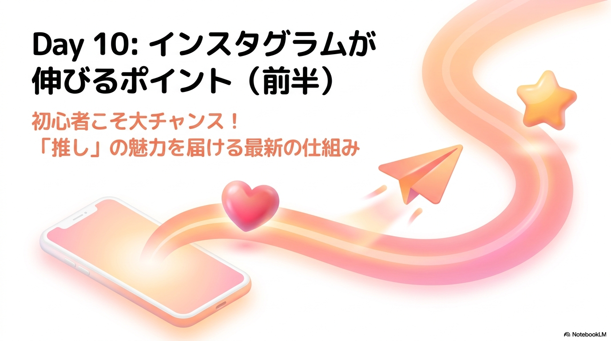
フォロワー数より投稿の「質」が重視される新アルゴリズムの本質を理解し、視聴維持率・共有数・オリジナリティを意識したリール制作の基礎を、自分の発信に1つ落とし込めるようになる。
InstagramのCEOが「フォロワー数は意味がない」と明言した背景〜Uアルゴリズムの仕組みを理解し、なぜ今が初心者に有利な時代なのかを知る
投稿の質を決める4指標（視聴維持率・ターゲット・オリジナリティ・共有数）を整理し、特に「共有（紙飛行機マーク）」が最重要アクションである理由を知る
初心者がなぜ伸びやすいか（比率評価・自動テスト再生）を理解し、AIに「誰向けか」を学習させるための最初の目標「30本投稿」を設定できる
InstagramのCEOアダム・モッセーリ氏が「フォロワー数は意味がない」と明言したことが業界で大きな話題となっています。これは、アルゴリズムが「人気アカウントの優先表示」から「ユーザー個人の興味・関心に合う質の高い投稿の表示」へ根本的に転換したことを意味しています。
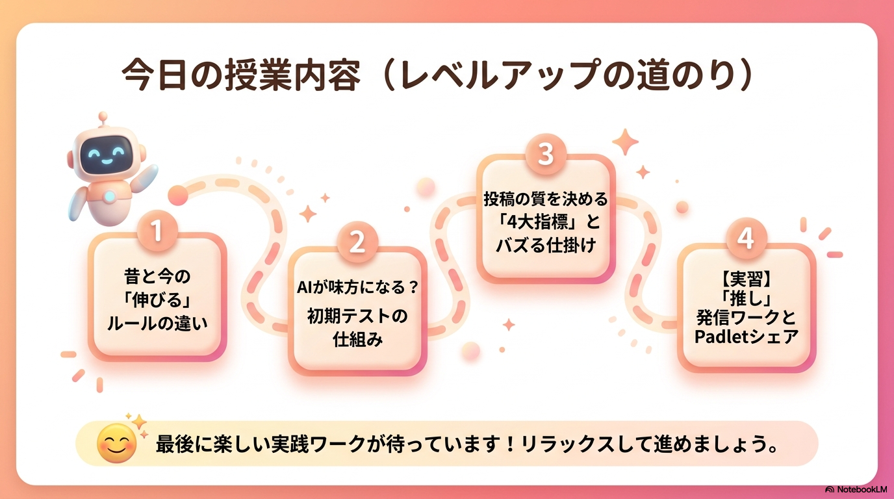
インスタグラム運営が最も重要視しているのは、昔も今も変わらず「ユーザーのアプリ滞在時間」です。以前は、すでに人気の高いフォロワー数の多いアカウントの投稿を優先表示させることで滞在時間を延ばそうとしていました。しかし、現在は「ユーザー個人の好みにマッチした新鮮なコンテンツ」を届ける方が、結果的にアプリに長く留まってもらえるという考え方に変わっています。
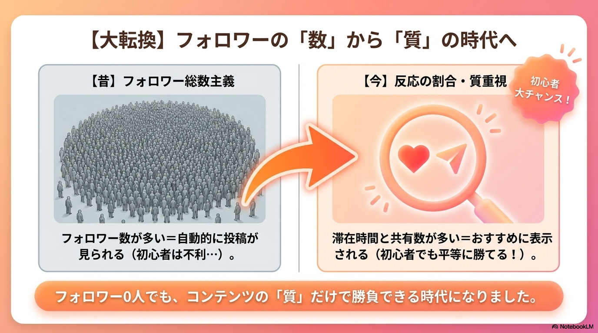
フォロー関係や「いいね総数」を基準に、すでにフォロワーの多い人気アカウントをおすすめ表示。新規参入者が埋もれやすい構造。
投稿自体のクオリティや「反応の割合」、ユーザー個人の関心を基準に評価。フォロワーが少なくても、質の高い投稿なら平等に拡散される。
この変化を象徴するのが、海外で先行テストされている「Uアルゴリズム（関心アルゴリズム）」です。ユーザーがネイルやダイエットなどの関心ジャンルを設定すると、フォローの有無に関わらず、関連する質の高い投稿が自動でタイムラインに優先表示される機能です。これは近い将来に全世界および日本へ上陸する可能性が高く、ますます投稿自体の質が重視されるようになります。
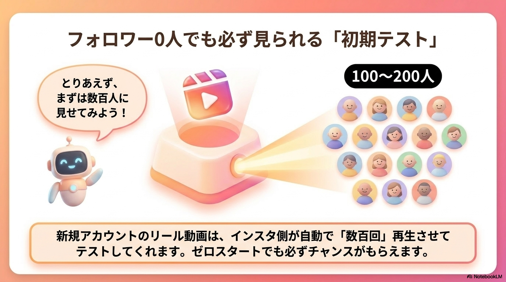
さらに現在、Google検索やAI検索ツール（ChatGPTなど）の検索結果に、Instagramの投稿が直接ヒットして露出するようになっています。なんと、Google等の検索エンジン経由によるインスタへのアクセス流入数は、2025年比で「160倍」に激増しています。フォロワー総数に依存せず、検索需要のある有益情報を届ける運用の重要性が急速に高まっています。
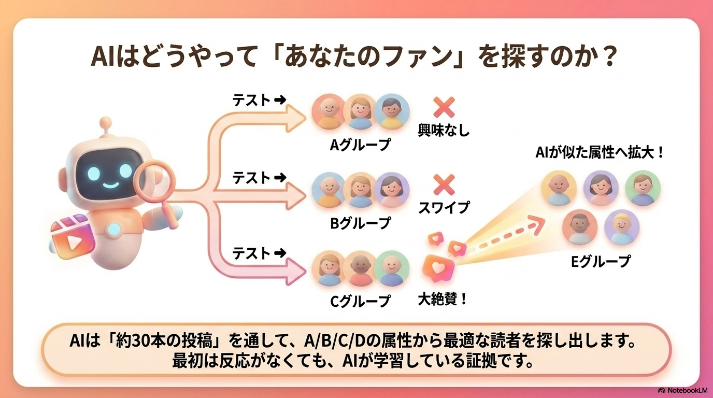
フォロワー数に関係なく、投稿が「質が高い」と判断されておすすめ表示されるためには、アルゴリズムが測定している4つの評価シグナルを正しく理解し、対策を施す必要があります。
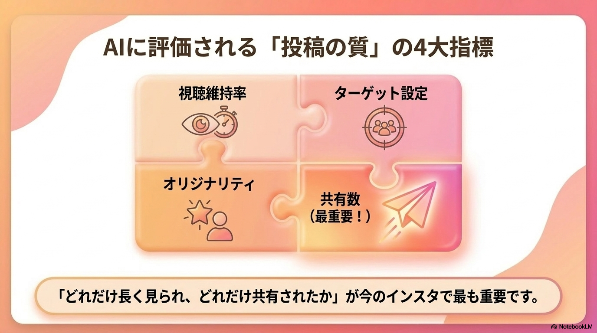
動画が途中で離脱されずにどれだけ長く見られたか。インサイトで冒頭の数秒に離脱が多い場合は、1秒目に「意外性フック（例：実はこれ…）」や「質問フック（例：これできる？）」を置き、強制的にユーザーのスクロールする親指を止める必要があります。
誰に向けた投稿なのかを悩みまで具体的に絞り込みます。ターゲットの悩みを言語化し、さらにプロフィールに1文でターゲットと発信内容を明記（例：「20代OLの貯金術」）することで、アルゴリズムがおすすめすべきユーザーを迷わず正しくマッチングしてくれます。
他者のコピーやAIで生成したテキストそのままの無機質な投稿はアルゴリズムに見抜かれて埋もれます。自分の体験談や思ったこと、失敗したエピソード（例：「火加減を間違えて焦げたので注意」）、検証にかかった具体的な期間など、一次情報を載せるのが差別化になります。
紙飛行機マークから家族や友人に共有された数です。いいねやコメントは自身のアプリ内で完結しますが、共有は「他の新規ユーザーにインスタアプリを強制起動させてアクセスさせる（利用者を2倍にする）」ため、インスタ運営に最も評価されるアクションとなります。
保存数は「本人があとで見返す」だけですが、共有数は「周りの人も巻き込んでインスタを開かせる」ため、現在インスタ運営は保存よりも共有数を最優先評価しています。
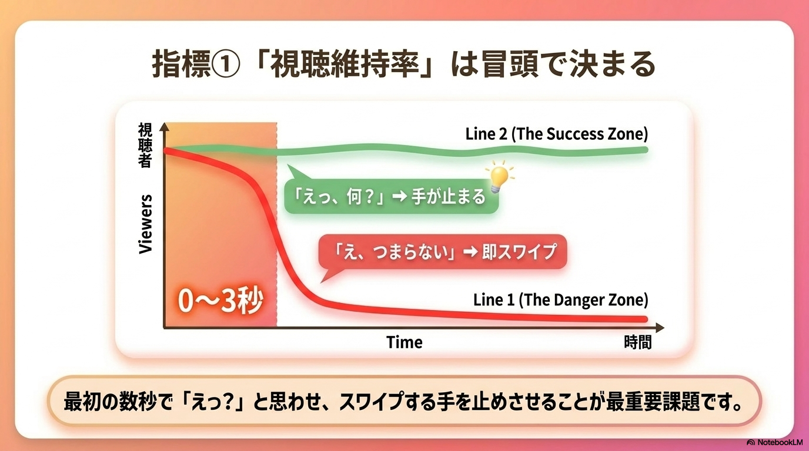
日常の強烈な共感。「ダイエット中なのに深夜にお菓子が我慢できない」「子育てで共感する夫の行動」など、わかる！と思わず身内に送りたくなる話題です。
「〇〇すべき大掃除のチェックポイント6選」などのノウハウのまとめや、知って得する生活の雑学、偉人の心に刺さる名言など、他者にも有益な情報です。
「デートの割り勘論争」や「SNSの子供の顔出し是非」といった賛否両論あるテーマや、見た瞬間に「やばくない？」と驚きを他者と共有したくなる情報です。
「フォロワーゼロだから伸ばすのは無理」というのは古い常識です。新しいアルゴリズムは、初心者が活動しやすく、平等に評価される仕組みを導入しています。
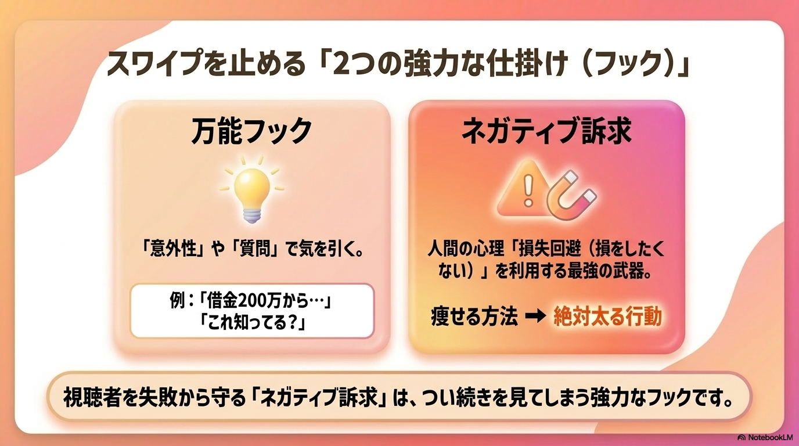
理由1：反応の「比率（割合）」で評価されるため
昔はいいねの総数が重視されましたが、現在は「フォロワー数に対するアクション数の割合」が重視されます。フォロワーが10万人いても100いいねしかつかない古いアカウントよりも、フォロワーは少なくても1人1人が確実に反応してくれる新規アカウントの方がおすすめ表示されやすいのです。
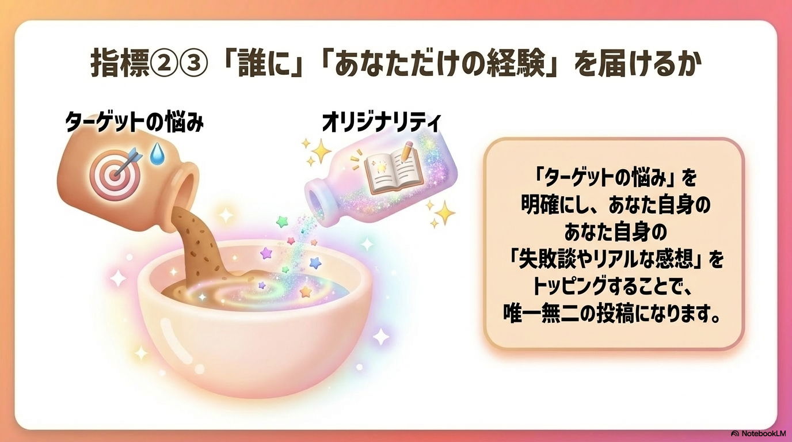
理由2：最初のテスト自動再生があるため
インスタ公式の機能として、フォロワーが0人のアカウントであっても、投稿したリール動画は必ず最初のテストとして数百回（100〜200回）は自動的にユーザーに表示・再生されるように設計されています。新規クリエイターの発信意欲を損なわせないための平等なチャンスです。
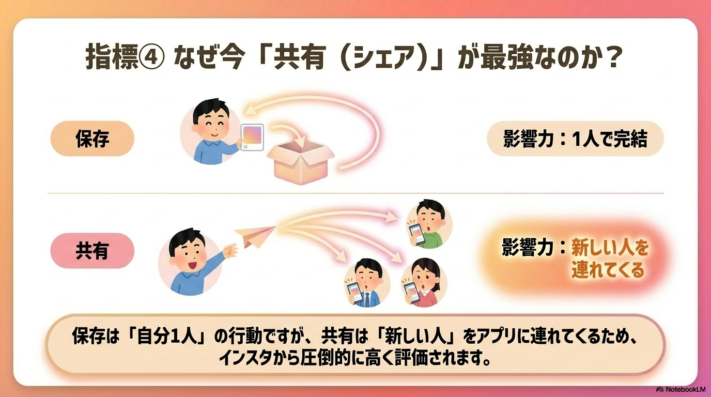
理由3：AIによるターゲット（属性）テスト
自動再生された数百回の中で、AIがA〜Dなどの異なる興味グループに動画を表示し「この投稿はどの属性の人に響くか」を細かくテストしています。テスト結果で維持率が高かった属性のユーザーグループに、おすすめの輪がどんどん広がっていく仕組みです。
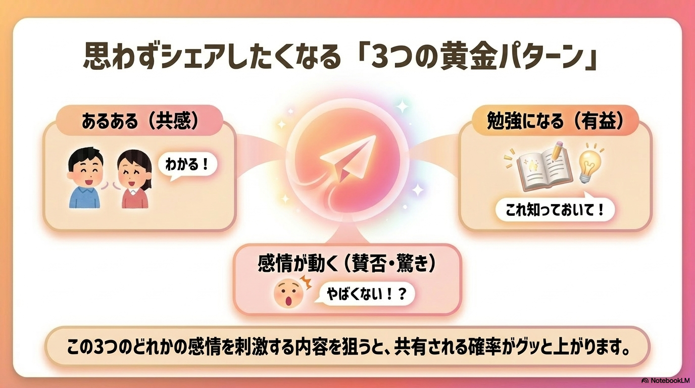
まず「30本投稿」を目指すべき理由：
数本の投稿だけでは、AIが「このアカウントは誰向けのジャンルなのか」の正しい判定（学習）を完了できません。再生数が数百回で停滞していても心配せず、まずは30本投稿を継続してください。30本投稿する中でAIの属性ターゲット精度が高まり、ある瞬間に突然バズる軌道に乗ります。
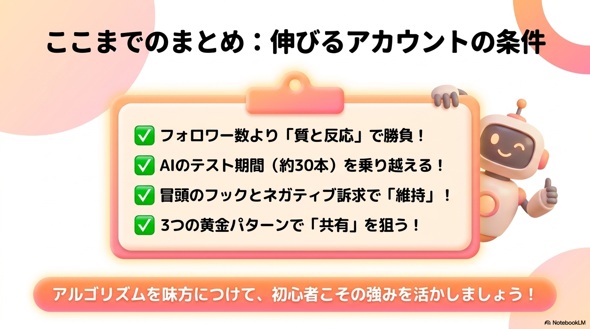
初期テスト再生の段階でしっかりと評価され、おすすめ枠を突破するためのリール制作には、3つの鉄則があります。
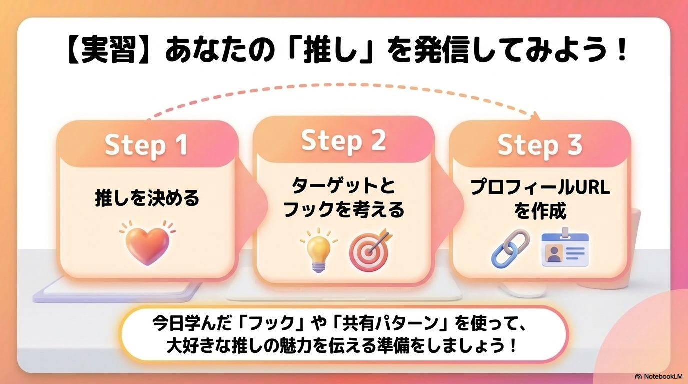
この3つの手順を守ることで、フォロワー数に頼らずに最初の自動再生枠からおすすめ表示の波へと乗り移ることができます。
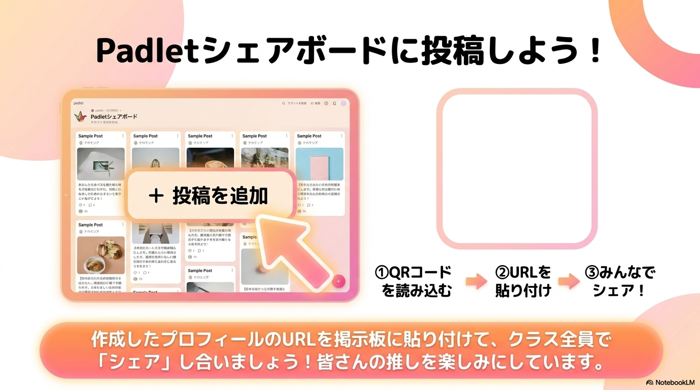
目的： 「推し」を発信するワークフローに沿ってアカウントのプロフィールを整え、共有ボードに提出する
後半コンテンツは準備中です。